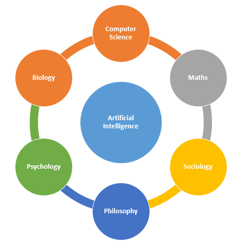
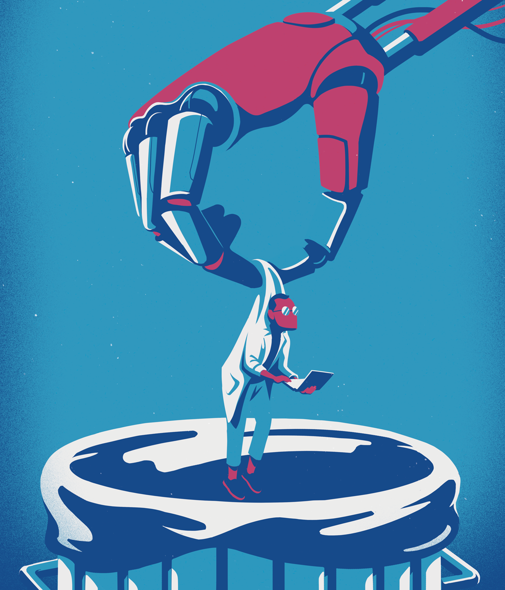

151044031
HW04
Bir robot bir insana zarar veremez veya hareketsiz kalarak bir insanın zarar görmesine göz yumamaz.
Bir robot insanların verdiği emirlere uymak zorundadır, birinci yasa ile çelişmediği sürece.
Bir robot birinci ve ikinci yasayla çelişmediği sürece kendi varlığını korumak zorundadır.
Voltaire: Akıl, her şeyi olduğu gibi görmekten başka bir şey değildir.
William C. Williamss: Yeni bir evren için bütün gereken, yeni bir akıldır.
Wolfgang Van Goethe: Akıl; birbirinden farklı olan şeylerin birbirlerine benzeyen yanlarını ve birbirine benzeyen şeylerin, birbirlerinden farklı yanlarını bilmektir.
Confucius: İnsanın akıllıca hareket edebilmesi için üç yolu vardır; birincisi, yapacağı şey üzerine düşünmektir ki bu en asil yoldur. İkincisi, önceden yapılmış iyi bir şeyi tenkit etmekle olur, bu en kolay yoldur. Üçüncüsüne gelince bu en acı yoldur, deneyerek ve uğraşarak bulduğun yoldur.

*Artificial İntelligence Diagram

*Dangers Of Artificial İntelligence İllustration